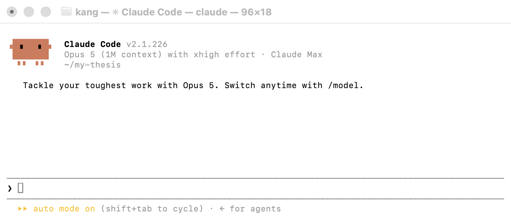
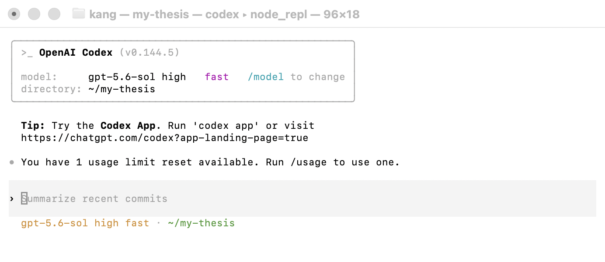
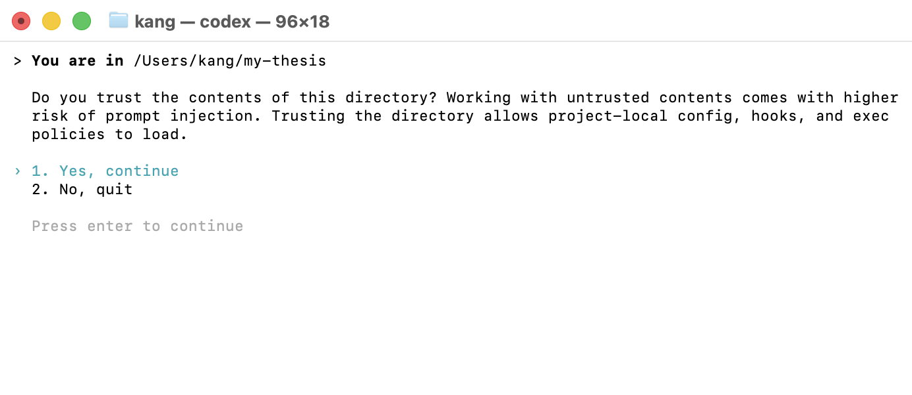

flowchart TB
A["터미널 열기"] --> B["cd ~/my-thesis<br/><i>실행 위치 = 작업 범위</i>"]
B --> C["claude · codex · gemini"]
C --> D{"첫 실행: 이 폴더를 신뢰하는가"}
D -->|승인| E["지시 입력"]
E --> F["에이전트가 읽고 · 쓰고 · 실행"]
F -.->|"결과를 보고"| E
E --> G["/exit 종료<br/><i>대화는 사라지고 파일은 남는다</i>"]
classDef gate fill:#fff,stroke:#9E1B32,stroke-width:2px
classDef ai fill:#fff,stroke:#6B7280,stroke-dasharray:5 4
class D gate
class F ai
2장. CLI와 컨텍스트 엔지니어링
노트이 장에서 배우는 것
터미널에서 파일 탐색과 실행의 기본 조작을 할 수 있다
CLI형 AI 에이전트의 동작 원리(컨텍스트 + 도구 + 루프)를 설명할 수 있다
CLAUDE.md 같은 프로젝트 수준 지침 파일을 설계할 수 있다
컨텍스트 창의 한계를 고려해 작업을 분할할 수 있다
1장에서 우리는 프로젝트를 추적 가능한 상태로 만들었다. 이제 그 위에 AI를 들일 차례다. 이 장이 끝나면 여러분의 작업 환경에는 이 책 전체를 관통하는 분업 구조의 원형이 갖춰진다: AI가 생성하고, 사람이 검증하고, Git이 이력을 보존한다. 생성의 자리에 무엇을 세울지가 이 장(그리고 3~4장)의 주제이고, 검증의 구조화는 5장의 주제이며, 보존은 1장에서 이미 마쳤다.
먼저 용어 하나를 정리하자. 이 책에서 말하는 AI 활용은 브라우저의 챗봇 창에 질문을 붙여 넣는 것이 아니다. 우리가 다루는 것은 CLI 에이전트 — 터미널에서 실행되어 여러분의 프로젝트 폴더 안에서 파일을 읽고, 쓰고, 코드를 실행하는 프로그램이다. 이 글을 쓰는 시점의 대표적 예가 Claude Code이고, 같은 부류의 도구가 여럿 있으며 앞으로 늘어날 것이다. 특정 제품의 명령어는 바뀌겠지만, 이 장이 가르치려는 것 — 에이전트라는 물건의 동작 원리, 그리고 에이전트가 참조할 정보 환경의 설계 — 은 도구를 갈아타도 그대로 가져갈 수 있는 부분이다.
2.1 왜 터미널인가
2.1.1 챗봇과 에이전트의 결정적 차이
챗 창의 AI와 CLI 에이전트의 차이는 성능이 아니라 손의 유무다. 챗봇에게 데이터 정제를 부탁하는 흐름을 떠올려 보라. 데이터의 구조를 말로 설명하고, 받은 코드를 복사해 RStudio에 붙여 넣고, 에러가 나면 에러 메시지를 다시 복사해 챗 창에 붙여 넣고, 고쳐진 코드를 다시 복사하고… 여러분이 하는 일의 대부분은 연구가 아니라 두 프로그램 사이에서 텍스트를 나르는 일이다.
CLI 에이전트는 이 운반 노동을 없앤다. 에이전트는 프로젝트 폴더 안에서 실행되므로 데이터 파일을 직접 열어 구조를 파악하고, 코드를 직접 파일로 쓰고, 직접 실행해 에러를 보고, 스스로 고쳐서 다시 실행한다. 사람의 역할은 운반에서 지시와 승인으로 올라간다. 이 차이가 “AI를 써 봤는데 별로던데”와 “연구 방식이 바뀌었다” 사이의 차이를 만드는 경우가 많다.
그리고 이 에이전트들이 사는 곳이 터미널이다. 그래픽 화면(GUI) 버전들도 나오고 있지만, 터미널이 기본 서식지인 데에는 이유가 있다. 터미널은 모든 것이 텍스트인 세계이고, 텍스트는 기록·재현·자동화가 되는 매체다. 1장의 언어로 말하면, 터미널에서 한 일은 커밋할 수 있고, 마우스로 한 일은 커밋할 수 없다.
2.1.2 명령어 열 개면 충분하다
터미널 공포증의 대부분은 “다 알아야 한다”는 오해에서 온다. 연구자에게 필요한 것은 다음이 거의 전부다.
pwd # 내가 지금 어느 폴더에 있나 (print working directory)
ls # 이 폴더에 뭐가 있나 (list)
cd my-thesis # 폴더 이동 (change directory)
cd .. # 한 단계 위로
mkdir output # 폴더 만들기
cat README.md # 파일 내용 화면에 출력
head -5 data/file.csv # 파일 앞 5줄만 보기 (숫자를 빼면 10줄)
cp a.R b.R # 복사 / mv a.R R/a.R # 이동·이름 변경
Rscript R/01_clean.R # R 스크립트 실행여기에 생존 기술 세 가지를 더한다. Tab 키 — 파일명 몇 글자를 치고 Tab을 누르면 자동 완성된다(긴 한글 파일명도 문제없다). 위쪽 화살표 — 직전 명령을 다시 불러온다. Ctrl+C — 잘못 실행한 것을 중단한다. 이 셋이 있으면 오타와의 전쟁은 대부분 피할 수 있다.
환경 안내를 짧게 하면, macOS는 터미널 앱을 열면 끝이다. Windows에서는 WSL(Windows Subsystem for Linux) 설치를 권한다 — 이 책과 대부분의 데이터 과학 문서가 가정하는 Unix 계열 명령어를 그대로 쓸 수 있게 된다(설치 절차는 부록 A). 사실 여러분은 이미 터미널을 한 번 썼다. 1장의 git clone이 그것이다. 눈치채지 못했다면, 그것이 바로 “필요한 만큼만 배우면 된다”는 이 절의 주장에 대한 증거다.
💻 따라 하기: 터미널을 열고 1장에서 만든 실습 저장소로 cd해 들어가, ls로 폴더 구조를 확인하고, head로 연습 데이터의 첫 다섯 줄을 보라. 여기까지 하는 데 명령 네 개면 된다.
2.1.3 에이전트를 띄운다
명령 열 개를 알았으니 이제 에이전트를 부를 차례다. 절차랄 것이 없다. 프로젝트 폴더로 들어가서 도구 이름을 치면 끝이다.
cd ~/my-thesis # 1장에서 만든 프로젝트로 이동
claude # 에이전트 실행실행하면 나오는 화면은 이렇다.

~/my-thesis에서 claude를 실행한 직후(2026년 8월 캡처). 머리글의 세 줄이 이 화면의 전부라고 해도 된다 — 도구와 버전, 지금 쓰는 모델, 그리고 작업 폴더 ~/my-thesis. 아래쪽 ›가 지시를 입력하는 자리이고, 맨 아래 상태줄은 승인 모드를 알려 준다(2.2.2에서 다룬다). 모델 이름과 버전은 여러분의 화면과 다를 것이다.
여기서 cd가 형식적인 절차가 아니라는 점이 중요하다. 에이전트는 실행한 위치를 자기 작업 폴더로 삼는다. 홈 디렉터리에서 실행하면 홈 전체가 작업 대상이 되고, 프로젝트 안에서 실행하면 그 프로젝트만 본다. 1장에서 폴더를 정돈해 둔 것이 여기서 값을 한다 — 에이전트에게 “어디까지가 이 일의 범위인가”를 폴더 경계로 알려 주는 셈이다. 화면 머리글이 ~/my-thesis를 짚어 주는 것이 그 확인이다.
전체 흐름은 이렇게 돈다.
다른 도구도 다르지 않다. 같은 폴더에서 이름만 바꿔 치면 된다.
codex # OpenAI Codex
gemini # Gemini CLI
~/my-thesis에서 codex를 실행한 화면(2026년 8월 캡처). 상자 안의 항목을 앞 화면과 나란히 놓고 보라 — 도구와 버전, 모델, directory: ~/my-thesis. 부르는 이름과 배치만 다를 뿐 알려 주는 정보가 같다. 프롬프트 자리에 흐리게 적힌 “Summarize recent commits”는 입력 예시이고, 맨 아래 줄이 모델과 작업 폴더를 다시 확인해 준다.
두 화면이 같은 것을 알려 준다는 점이 이 절의 요지다. 도구가 무엇이든 여러분이 확인할 것은 셋이다: 무엇이 돌고 있는가(도구·버전), 어떤 모델인가, 그리고 어느 폴더를 보고 있는가. 특히 세 번째를 습관적으로 확인하라. 엉뚱한 폴더에서 실행한 채 지시를 내리는 것이 초심자 사고의 절반이다.
💻 따라 하기: 자신이 쓰는 도구를 1장의 실습 저장소에서 실행하고, 첫 화면에서 위 세 가지가 어디에 표시되는지 찾아보라. 그리고 홈 디렉터리에서도 한 번 실행해 작업 폴더 표시가 어떻게 달라지는지 확인하라 — 지시는 내리지 말고 바로 종료할 것.
2.2 CLI 에이전트의 해부
2.2.1 컨텍스트 + 도구 + 루프
에이전트라는 말이 신비하게 들리지만, 구조는 세 부품으로 요약된다.
- 컨텍스트(context): 모델이 매 순간 보고 있는 정보의 총합. 여러분의 지시, 지금까지의 대화, 읽어 들인 파일 내용, 실행 결과, 그리고 뒤에서 다룰 프로젝트 지침 파일.
- 도구(tools): 모델이 호출할 수 있는 손. 파일 읽기, 파일 쓰기, 셸 명령 실행이 기본 삼종이다.
- 루프(loop): 에이전트의 심장. 모델이 다음 행동을 결정하고 → 도구를 호출하고 → 결과를 컨텍스트에 추가하고 → 다시 다음 행동을 결정한다. 과제가 끝났다고 판단할 때까지 이 회전이 반복된다.
flowchart LR
subgraph CTX["컨텍스트"]
direction TB
c1["지시 · CLAUDE.md"]
c2["읽은 파일 · 실행 결과"]
c3["대화 이력"]
end
CTX --> M["모델:<br/>다음 행동 결정"]
M --> T["도구 호출<br/>읽기 / 쓰기 / 실행"]
T -->|"결과를 컨텍스트에 추가"| CTX
M -->|"과제 완료 판단"| E["종료 · 보고"]
classDef accent fill:#9E1B32,stroke:#9E1B32,color:#fff
class M accent
챗봇과의 구조적 차이가 바로 이 루프다. 챗봇은 한 번 답하고 공을 사람에게 넘기지만, 에이전트는 “스크립트를 실행했더니 에러가 났다 → 에러 메시지를 읽는다 → 코드를 고친다 → 다시 실행한다”를 사람 개입 없이 회전한다. 4장에서 다룰 멀티에이전트도, 5장에서 다룰 검증 루프도 전부 이 기본 회전의 변주다. 지금 이 세 부품의 그림을 머리에 넣어 두면 이 책 후반부가 전부 이 그림 위의 덧그림이라는 것을 알게 된다.
2.2.2 권한: 무엇을 자동 승인하면 안 되는가
손이 있는 프로그램은 사고를 칠 수 있는 프로그램이다. 그래서 모든 CLI 에이전트에는 승인 체계가 있다 — 파일을 수정하거나 명령을 실행하기 전에 사람에게 물어보는 단계다. 그리고 모든 도구에는 이 물음을 끄는 옵션(자동 승인 모드)이 있다. 편리함의 유혹이 큰 지점이라, 원칙을 명확히 세워 두자.
승인 체계의 첫 관문은 2.1.3에서 이미 지나쳤다. 아직 열어 본 적 없는 폴더에서 에이전트를 띄워 보자.
cd ~/my-thesis
codex지시를 받기 전에 이것부터 묻는다.

~/my-thesis에서 codex를 처음 실행했을 때의 확인 화면(2026년 8월 캡처). Claude Code도 문구만 다를 뿐 같은 것을 묻는다. 눈여겨볼 것은 이유를 밝히는 대목이다 — “신뢰할 수 없는 내용을 다루면 프롬프트 인젝션 위험이 커지고, 신뢰하면 이 폴더의 설정·훅·실행 정책이 로드된다”. 즉 이 질문은 “파일을 읽어도 되나”가 아니라 “이 폴더가 나에게 지시를 내려도 되나”를 묻는 것이다. 남의 저장소를 clone해 열 때 특히 새겨야 할 구분이다(박스 3-1에서 다시 만난다).
이 관문은 폴더마다 한 번씩만 나온다. 습관적으로 승인을 누르게 되기 쉬우니, 남이 만든 저장소에서 처음 띄울 때만은 잠시 멈추라. 그 폴더의 .claude/나 그에 준하는 설정 폴더에 무엇이 들어 있는지 보고 나서 눌러도 늦지 않다.
판단 기준은 1장에서 이미 배웠다: 되돌릴 수 있는가. Git으로 추적되는 파일의 수정은 자동 승인해도 큰 위험이 없다 — 최악의 경우 직전 커밋으로 돌아가면 된다(1장이 보험이 되는 순간이다). 반면 다음 세 가지는 자동 승인 대상에서 제외해야 한다.
- 원자료 접근.
data-raw/는 아예 읽기 전용으로. 많은 도구가 폴더별 권한 설정을 지원하며, 지원하지 않더라도 다음 절의 지침 파일에 금지 규칙을 명시한다(그리고 운영체제 수준에서 폴더를 읽기 전용으로 걸 수도 있다). - 삭제와 덮어쓰기 계열 명령.
rm, 특히rm -rf같은 재귀 삭제는 Git 바깥의 파일(추적 안 되는 데이터,.gitignore된 파일!)까지 지운다..gitignore에 넣어 둔 원자료는 Git이 지켜 주지 않는다는 점을 기억하라. - 외부 전송. 네트워크로 무언가를 보내는 작업 — 파일 업로드, 이메일, API로의 데이터 전송 — 은 항상 사람의 눈을 거친다. 민감한 설문 자료가 걸린 문제이며, 8장에서 규범 차원을 다룬다.
📦 박스 2-1. 에이전트가 내 데이터를 지웠다면
실제로 일어나는 사고의 전형은 이렇다. “output 폴더를 정리해 줘”라고 지시했는데, 에이전트가
output/이 아니라 프로젝트 루트에서 정리를 시작한다. 자동 승인 모드였다면, 알아차렸을 때는 이미 파일들이 사라진 뒤다.사후 대응부터: Git이 추적하던 파일은
git checkout .한 줄로 전부 돌아온다. 이것이 1장에서 “커밋을 자주 하라”고 강조한 진짜 이유 중 하나다 — 커밋은 에이전트 사고에 대한 보험이고, 보험료는 커밋 메시지 한 줄이다. 돌아오지 않는 것은 추적되지 않던 파일, 즉.gitignore에 넣어 둔 원자료다. 그래서 원자료는 (a) 프로젝트 폴더 밖에 원본을 따로 두거나 (b) 클라우드 동기화 폴더에 두거나 (c) 운영체제에서 읽기 전용 속성을 걸어 둔다. 셋 다 하면 더 좋다.사전 예방의 요체는 이 사고가 에이전트의 악의가 아니라 지시의 모호함에서 왔다는 데 있다. “정리해 줘”는 사람끼리도 사고가 나는 지시다. 경로를 명시하고(“output/ 안의 .png 파일만”), 파괴적 작업은 실행 전에 대상 목록을 먼저 보고하게 하라(“지울 파일 목록을 먼저 보여 줘”). 눈치챘겠지만 이것은 5장 PEV 루프의 Plan 단계를 한 문장 수준에서 실천하는 것이다.
2.3 프롬프트에서 컨텍스트로
2.3.1 일회성 프롬프트의 한계
에이전트를 쓰기 시작한 연구자의 전형적 궤적이 있다. 처음에는 감탄한다. 그러다 몇 주 뒤 두 가지 피로가 쌓인다. 첫째, 같은 설명의 반복. 세션을 열 때마다 “우리 데이터는 이런 구조고, 변수명은 이런 규칙이고, 표는 이런 형식으로”를 다시 말하고 있다. 둘째, 산출물의 비일관. 월요일의 표와 목요일의 표가 소수점 자릿수부터 변수 표기까지 미묘하게 다르다. 매번 조금씩 다르게 설명했으니 당연한 결과다.
3장에서 이것을 “매번 코드북을 다시 쓰는 코더”에 비유했었다. 진단도 같다: 문제는 지시가 대화 속에만 존재한다는 것이다. 처방도 같다: 지시를 대화 밖의 파일로 꺼낸다. 다만 3장의 스킬이 특정 과업의 절차를 담는다면, 이 장에서 다루는 것은 그보다 아래층 — 모든 작업에 상시 적용되는 프로젝트의 헌법이다.
2.3.2 컨텍스트 엔지니어링이라는 관점
이 지점에서 관점의 전환이 하나 필요하다. 초심자는 “어떻게 물어봐야 좋은 답이 나올까”를 고민한다(프롬프트 엔지니어링). 숙련자는 질문을 바꾼다: “모델이 이 작업을 할 때 무엇을 보고 있는가, 그리고 그 정보 환경을 어떻게 설계할 것인가”(컨텍스트 엔지니어링). 프롬프트는 그 환경의 한 조각일 뿐이다.
에이전트가 여러분의 지시를 받는 순간 실제로 보고 있는 것을 층으로 그리면 이렇다.
flowchart TB
A["시스템 계층 — 도구 자체의 기본 지침<br/><i>도구 제작사가 설계</i>"]
B["프로젝트 계층 — CLAUDE.md<br/><b>2장에서 설계 ★</b>"]
C["과업 계층 — 스킬(SKILL.md) · 이번 지시문<br/><b>3장에서 설계</b>"]
D["자료 계층 — 읽어 들인 파일 · 실행 결과 · 대화 이력<br/><i>작업 중 축적</i>"]
A --> B --> C --> D
classDef accent fill:#9E1B32,stroke:#9E1B32,color:#fff
classDef fixed fill:#E5E7EB,stroke:#6B7280
class B,C accent
class A,D fixed
우리가 설계할 수 있는 것은 위 네 계층 중 프로젝트 계층과 과업 계층이고, 계층의 분업 원칙은 3장에서 이미 선언했다: 항상 참이어야 하면 프로젝트 계층(CLAUDE.md), 가끔 필요하면 과업 계층(스킬). 이 장은 그중 프로젝트 계층을 짓는다.
추상적 설명보다 실물이 빠르다. 다음 절에서 석사논문 프로젝트의 CLAUDE.md를 통째로 싣고, 그 파일이 2.3.1에서 말한 두 피로 — 같은 설명의 반복과 산출물의 비일관 — 를 각각 어떻게 처리하는지 절별로 뜯어본다.
2.4 연구 프로젝트용 CLAUDE.md 설계
2.4.1 실물 하나를 통째로
CLAUDE.md는 프로젝트 루트에 두는 마크다운 파일로, 에이전트가 이 폴더에서 일할 때 항상 참조하는 상시 지침이다. 파일 이름은 도구마다 다르다 — Claude Code는 CLAUDE.md를, OpenAI Codex는 AGENTS.md를, Gemini CLI는 GEMINI.md를 읽는다. 이름이 갈릴 뿐 역할도 작성법도 같으므로, 이 절은 CLAUDE.md를 대표로 삼아 설명하고 도구별 차이는 절 끝의 박스 2-2에서 정리한다. 추상적 작성법보다 실물이 빠르다. 석사논문 프로젝트의 CLAUDE.md 예시를 통째로 싣는다. (파일로 받아 갈 수 있게 실습 저장소 ai-socsci-code의 ch02-cli/에 두었다. 아래 내용을 그대로 옮겨 써도 된다.)
이 파일을 위에서부터 뜯어 보자. 구성은 일곱 절이고, 각 절이 이 책의 앞 장들과 연결된다.
개요와 데이터 — 에이전트가 이 프로젝트를 처음 만났을 때 알아야 할 것들이다. 특히 데이터 절은 3장에서 배운 함정 목록(gotchas)의 프로젝트판이다: 결측 코딩, 역코딩 문항, 비정규화 가중치. 이 세 줄이 없으면 에이전트는 매번 같은 함정에 빠진다. 코드북을 “먼저 읽을 것”이라고 지시해 상세 정보는 별도 파일로 위임한 것도 눈여겨보라 — 3장 progressive disclosure의 응용이다.
코딩 규칙과 산출물 형식 — 비일관 문제(2.3.1)의 처방. 월요일의 표와 목요일의 표가 같아지는 것은 이 절 덕분이다. set.seed 지정은 재현가능성(1장)의 사소하지만 확실한 실천이다.
문체 — 다음 항에서 따로 다룬다.
금지 사항 — 2.2.2 권한 논의의 문서화다. 도구의 권한 설정이 기술적 방벽이라면 이 절은 규범적 방벽이고, 둘은 겹칠수록 좋다. 마지막 줄(“수치를 실행 없이 추정해 쓰지 않는다”)은 특별히 강조한다 — 에이전트가 코드를 돌리지 않고 ‘그럴듯한’ 결과 수치를 지어내는 것은 5장에서 말할 ’그럴듯한 환각’의 가장 위험한 형태이며, 명시적으로 금지해 둘 가치가 있다.
작업 종료 시 — 커밋의 최종 권한을 사람에게 남기는 것(1장의 게이트), 그리고 세션 간 인계 장치(2.5절)의 예약이다.
📦 박스 2-2. 도구마다 다른 파일 이름, 그리고 AGENTS.md
지침 파일의 이름은 표준이 아니라 도구마다의 관례다. 이 글을 쓰는 시점의 주요 도구는 다음과 같다.
도구 읽는 파일 Claude Code CLAUDE.mdOpenAI Codex AGENTS.mdGemini CLI GEMINI.md(설정에서 이름 변경 가능)Cursor .cursor/rules/또는.cursorrulesGitHub Copilot .github/copilot-instructions.md이름만 다를 뿐 담는 내용과 작성 원칙은 같다. 2.4.1에서 뜯어본 일곱 절 구조는 어느 파일에 넣어도 그대로 작동하므로, 도구를 갈아탄다고 지침을 다시 쓸 일은 없다. 파일 이름만 바꾸면 된다.
이 분열 자체를 정리하려는 시도가 AGENTS.md다. 여러 도구 제작사가 함께 만든 공통 규약으로, 지금은 리눅스 재단 산하 Agentic AI Foundation이 관리하며 6만 개가 넘는 공개 저장소가 채택했다. 도구를 여럿 오가며 일한다면 AGENTS.md 하나를 정본으로 두고 도구별 파일이 그것을 가리키게 하는 편이 낫다 — 규칙을 고칠 때 한 곳만 고치면 되기 때문이다.
다만 Claude Code는 AGENTS.md를 직접 읽지 않는다(공식 문서가 명시한다). 그래서 CLAUDE.md를 만들되 그 안에 불러오기 한 줄만 적는 방법이 있다.
@AGENTS.md이 도구에만 해당하는 지침이 있으면 이 줄 아래에 덧붙이면 된다. 덧붙일 것이 없다면 아예 이름표만 하나 더 거는 방법도 있다.
ln -s AGENTS.md CLAUDE.md성공하면 아무것도 출력되지 않는다 — 1.2.2의
git add와 같은 침묵이다. 이제 두 이름이 같은 파일을 가리키므로, 어느 도구로 열어도 같은 지침을 읽는다. (윈도우에서 심볼릭 링크를 만들려면 관리자 권한이나 개발자 모드가 필요하니, 그쪽에서는 위의 불러오기 방식을 쓰는 편이 낫다.)요점은 파일 이름이 아니다. 이 절이 가르치는 것은 무엇을 적을 것인가이고, 그 답은 도구가 바뀌어도 남는다.
2.4.2 한국어 문체 지침이라는 무기
문체 절은 사족처럼 보이지만, 한국어로 연구하는 우리에게는 실질 가치가 큰 부분이다. 언어 모델의 한국어 학술 산출물은 방치하면 번역투로 흐른다 — “~에 대하여 논의되어진다”, “~라고 할 수 있을 것이다” 같은 문형, 영어 어순의 직역, 그리고 어색한 용어 선택(“유의미한 차이”). 이것을 매번 손으로 고치는 것은 소모적이고, 세션마다 지적하는 것은 비일관을 낳는다.
해법은 문체 규범의 명문화다. 위 예시처럼 금지 문형과 권장 문형을 CLAUDE.md에 몇 줄 적어 두면, 모든 산출물의 문체가 한 번에 통제된다. 필자의 경험으로 특히 효과가 좋은 항목은 (a) 금지 문형의 구체적 예시(“~되어진다” 같은 이중 피동), (b) 통계 서술의 표준 문형 제시, (c) 분야 용어의 확정(“정당 일체감”이지 “정당 동일시”가 아니다 등 — 프로젝트마다 용어 대조표를 늘려 가면 된다). 강의안·논문·행정 문서처럼 문서 종류마다 문체가 다르다면, 공통 규범만 CLAUDE.md에 두고 종류별 세칙은 3장의 스킬로 내리는 계층화가 답이다.
2.4.3 안티패턴: 헌법이 백과사전이 되면
CLAUDE.md의 흔한 실패는 부족이 아니라 과잉이다. 효과를 본 사용자가 규칙을 계속 추가하다 보면 파일이 수백 줄로 자라는데, 그때부터 역설이 시작된다. 지침이 길수록 개별 지침의 준수율은 떨어진다. 긴 문서 속에서 중요한 규칙과 사소한 규칙이 같은 비중으로 흐려지고, 컨텍스트의 상당 부분을 상시 점유해 정작 작업 공간을 잠식한다.
경험칙으로 핵심 규칙 20줄 원칙을 제안한다. 정확히 20줄이라는 뜻이 아니라, “이 파일의 모든 줄이 정말 모든 작업에 필요한가”를 주기적으로 심문하라는 뜻이다. 진단 기준 셋:
- 특정 과업에서만 쓰는 규칙이 들어 있다 → 3장의 스킬로 내려보낸다.
- 상세 참고 정보(변수 사전, 문헌 목록)가 들어 있다 → 별도 파일로 빼고 “필요하면 읽으라”는 포인터만 남긴다.
- 에이전트가 반복해서 어기는 규칙이 있다 → 지우지 말고 반대로 승격한다. 문서 상단으로 올리고, 예시를 붙이고, 그래도 안 되면 규칙이 아니라 구조로 강제할 방법(권한 설정, 스크립트 고정)을 찾는다. “지침으로 안 되면 구조로” — 5장의 정신이다.
CLAUDE.md도 Git으로 관리되는 파일이라는 점을 잊지 말라. 규칙의 추가와 삭제가 커밋 이력으로 남으니, “왜 이 규칙이 생겼더라”는 질문에는 git log CLAUDE.md가 답한다. 연구실 공용 프로젝트라면 CLAUDE.md의 개정을 PR로 돌리는 것(1.3.3)도 자연스럽다 — 이 파일은 사실상 연구실의 작업 규약이기 때문이다.
2.5 컨텍스트 창 관리
2.5.1 긴 대화는 앞을 잊는다
마지막으로 다룰 것은 에이전트의 유한성이다. 모델이 한 번에 볼 수 있는 정보량(컨텍스트 창)에는 상한이 있다. 토큰이라는 단위로 재는데, 대략의 감만 잡자면 이 책 한 장(章) 분량의 텍스트가 수만 토큰 규모다. 창이 아무리 커도 세션이 길어지면 — 파일을 여러 개 읽고, 시행착오를 거듭하고, 대화가 쌓이면 — 결국 한계에 닿고, 도구는 오래된 내용을 요약하거나 잘라 내며 버틴다. 증상은 뚜렷하다. 세션 초반에 합의한 규칙을 어기기 시작하고, 이미 해결한 문제를 다시 시도하고, 읽었던 파일의 내용을 다시 묻는다.
이것은 결함이라기보다 작업 설계의 조건이다. 사람의 집중력에 한계가 있어서 회의를 한 시간 단위로 끊듯이, 에이전트의 컨텍스트에 한계가 있으므로 작업을 세션 단위로 끊는다.
2.5.2 한 세션 한 과업, 그리고 인계 문서
실천 규칙은 두 개다.
첫째, 한 세션 한 과업. “데이터 정제”가 한 세션, “기술통계”가 다음 세션, “회귀 모형”이 그다음 세션이다. 과업이 끝나면 커밋하고 세션을 닫는다. 새 세션은 깨끗한 컨텍스트에서 CLAUDE.md만 지참하고 시작한다. 이 리듬은 1장의 “의미 있는 작업 단위마다 커밋”과 정확히 포개진다 — 세션의 경계가 곧 커밋의 경계다. (5장에서 배치 처리 시 “배치마다 새 컨텍스트로 시작하라”고 권하는 것도 같은 원리의 적용이다.)
둘째, 상태는 파일로 인계한다. 세션이 닫히면 대화는 사라지지만 파일은 남는다. 그러므로 세션 간에 전달되어야 할 상태 — 무엇이 끝났고, 무엇이 남았고, 어떤 결정이 내려졌는지 — 를 파일에 적는 습관을 들인다. 관례로 프로젝트 루트에 PROGRESS.md를 두기를 권한다.
새 세션의 첫 지시는 이렇게 시작된다: “PROGRESS.md를 읽고 이어서 진행해 줘.” 앞서 본 CLAUDE.md 예시의 마지막 절(“작업 종료 시 미완료 사항은 PROGRESS.md에 기록”)이 이 인계를 에이전트의 의무로 만들어 두었다는 것을 확인하라. 사람 쪽 부담은 세션 끝에 이 파일을 한 번 훑어보는 것뿐이다.
인계 문서라는 발상이 낯설지 않을 것이다. 1.1절에서 재현가능한 연구를 “미래의 나에게 보내는 인수인계 문서”라고 정의했었다. PROGRESS.md는 그 정의의 가장 문자 그대로의 구현이다 — 다만 받는 쪽이 6개월 뒤의 내가 아니라 10분 뒤의 새 세션일 뿐이다.
2.5.3 누가 쓰는가, 그리고 커밋과 무엇이 다른가
인계 문서를 처음 도입할 때 나오는 질문 셋을 정리한다.
첫째, 이걸 매번 손으로 써야 하는가. 아니다. 쓰는 것은 에이전트이고, 사람은 읽고 고친다. 그렇게 만드는 장치가 2.4.1 CLAUDE.md 예시의 마지막 절이다.
CLAUDE.md에서 다시
## 작업 종료 시 - 변경 사항을 요약하고 커밋 메시지를 제안할 것 (커밋은 사람이). - 미완료 사항은 PROGRESS.md 에 기록.
이 두 줄이 인계를 에이전트의 의무로 만든다. 세션 끝에 “정리하고 마무리하자”고 하면 에이전트가 PROGRESS.md를 갱신한다. 사람의 몫은 그것을 한 번 훑어 틀린 것을 고치는 일이다. 이 검토를 건너뛰지 말라 — 에이전트는 자기가 한 일을 실제보다 잘 됐다고 적는 경향이 있고, 그 낙관이 그대로 다음 세션의 전제가 된다. 인계 문서의 오류는 복리로 불어난다.
도구가 자체적으로 쌓아 주는 메모리 기능과 혼동하지 말아야 한다. 이 글을 쓰는 시점의 여러 CLI 에이전트는 사용자의 교정과 선호를 스스로 기록해 두는 장치를 갖고 있는데, 그것은 대개 내 컴퓨터에만 있고 저장소에 커밋되지 않는다. 편리하지만 연구의 기록은 아니다. 공동연구자에게 건너가지 않고, 논문 심사자에게 제출할 수도 없기 때문이다. PROGRESS.md가 저장소 안의 파일이어야 하는 이유가 이것이다.
둘째, 이름이 PROGRESS.md여야 하는가. 아니다. 고유명사가 아니라 이 책이 고른 관례일 뿐이며, HANDOFF.md든 NOTES.md든 docs/연구일지.md든 상관없다. 지켜야 할 것은 이름이 아니라 세 조건이다. 위치가 고정되어 있을 것, CLAUDE.md가 그 이름을 지목하고 있을 것(그래야 에이전트가 어디에 쓸지 안다), 그리고 Git으로 추적될 것. 다만 한 프로젝트 안에서는 하나로 정해 두라. 인계 문서가 두 개면 어느 쪽이 최신인지를 다시 관리해야 하는데, 그것은 박스 1-1이 조롱한 바로 그 문제다.
셋째, 커밋 이력이 있는데 왜 또 필요한가. 이 질문이 가장 중요하다. 답은 둘이 서로 다른 시제를 기록한다는 것이다.
| 커밋 이력 | 인계 문서 | |
|---|---|---|
| 기록하는 것 | 무엇이 바뀌었나 | 무엇이 안 끝났나, 무엇을 정했나 |
| 시제 | 과거 (완료된 변경) | 현재와 미래 (진행 중, 다음 할 일) |
| 구조 | 덧붙이기만 함 — 과거는 불변 | 덮어쓰기 — 항상 최신 한 장 |
| 읽는 법 | 훑어 내려가며 재구성 | 한 번에 읽음 |
핵심 차이는 diff는 존재하는 것만 보여 준다는 데 있다. 커밋 이력은 하지 않기로 한 것, 시도했다가 버린 것, 아직 손대지 않은 것을 담지 못한다. “다중대체를 검토했으나 부록으로 미뤘다”는 결정은 어느 커밋의 변경 내용에도 나타나지 않는다 — 그 결정의 결과는 코드의 부재이기 때문이다. 그리고 연구에서 되짚어야 하는 것은 대개 그런 부재다.
1.2.2에서 “커밋 메시지에는 왜를 쓰라”고 했으니 중복 아닌가 싶겠지만, 두 ’왜’의 층위가 다르다. 커밋 메시지의 왜는 그 변경 하나에 대한 것이고(“표준오차를 클러스터로 교체”), 인계 문서의 왜는 프로젝트 수준의 결정이다(“결측은 listwise로 확정”). 후자는 어느 한 커밋에 속하지 않는다.
그래서 둘은 경쟁하지 않고 짝을 이룬다. 앞의 예시를 다시 보라 — 완료 항목에 (커밋 a3f21c)가 붙어 있다. 인계 문서가 커밋을 가리키면 “이 결정이 코드의 어디로 갔는가”가 연결되고, 반대로 커밋에서 출발해도 “이 변경이 어떤 결정의 산물인가”를 되짚을 수 있다. 인계 문서는 커밋 이력의 색인이자 각주다.
실습 과제
- 터미널 몸풀기. 1장 실습 저장소에서 2.1.2의 명령만으로 다음을 수행하라: 폴더 구조 확인 → 연습 데이터 첫 10줄 보기 →
output/아래 새 하위 폴더 생성 → R 스크립트 하나 실행. 마우스는 금지다. - CLAUDE.md 초안. 자신의 석사논문(또는 진행 중인 연구)용 CLAUDE.md를 2.4.1의 일곱 절 구조로 작성하라. 데이터 절의 함정 목록에 최소 두 항목, 금지 사항에 최소 세 항목을 채워라. 작성 후 동료와 교환해 “내가 이 프로젝트에 처음 온 조교라면 이것으로 충분한가”의 관점에서 상호 리뷰하라.
- 대조 실험. 같은 분석 요청을 CLAUDE.md가 없는 폴더와 있는 폴더에서 각 3회 실행하고 산출물을 비교하라. 수치가 아니라 형식과 문체의 회차 간 일관성을 보라 — 열 순서, 소수 자릿수, 각주 유무, 통계 서술 문형. 드러난 미비점으로 CLAUDE.md를 개정하고 커밋하라.
- (심화) 인계 리허설. 한 과업을 일부러 두 세션에 걸쳐 수행하라. 첫 세션 종료 시 PROGRESS.md 작성을 지시하고, 두 번째 세션을 “PROGRESS.md를 읽고 이어서”로 시작해, 인계가 실제로 성립하는지 — 결정 사항이 유지되는지 — 확인하라.
이 장의 체크리스트
더 읽을거리
(웹 자료의 주소는 2026년 8월에 접속을 확인했다.)
- Software Carpentry. “The Unix Shell.” https://swcarpentry.github.io/shell-novice/ — 터미널 기초의 표준 교재. 이 장의 2.1이 압축한 내용의 원본
- Anthropic. “Effective harnesses for long-running agents.” https://www.anthropic.com/engineering/effective-harnesses-for-long-running-agents — “프롬프트에서 컨텍스트로”라는 관점 전환을 도구 제작자 쪽에서 서술한 글. 같은 블로그의 “Building effective AI agents”도 함께 읽을 만하다
- Claude Code 공식 문서, “How Claude remembers your project.” https://code.claude.com/docs/en/memory — 지침 파일이 어디에 놓이고 어떤 순서로 읽히는지의 정본. 도구별 세부는 여기서 확인하라. 이 장의 원리는 도구가 바뀌어도 유효하다
- AGENTS.md. https://agents.md — 박스 2-2의 공통 규약 문서. 지침 파일에 무엇을 담을지의 예시 목록이 짧고 실용적이며, 도구별 지원 현황도 여기서 갱신된다
- 실습 저장소
ch02-cli/— 2.4.1의 CLAUDE.md 전문과 PROGRESS.md 템플릿 (https://github.com/woochangkang/ai-socsci-code)
다음 장 예고: 프로젝트의 헌법(CLAUDE.md)이 섰으니, 이제 그 아래에 법률 — 특정 과업의 절차 — 을 제정할 차례다. 3장에서는 반복 작업을 스킬로 모듈화한다. 이 장에서 “특정 과업에서만 쓰는 규칙은 스킬로 내려보내라”고 했던 그 목적지다.